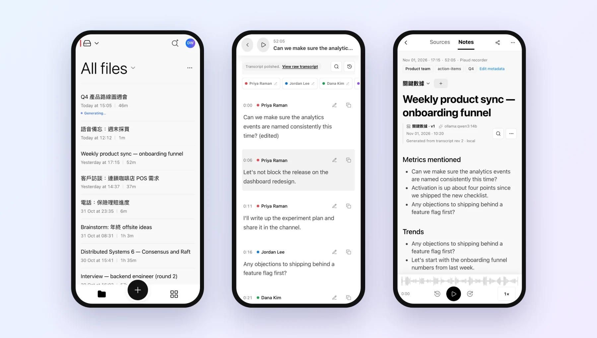
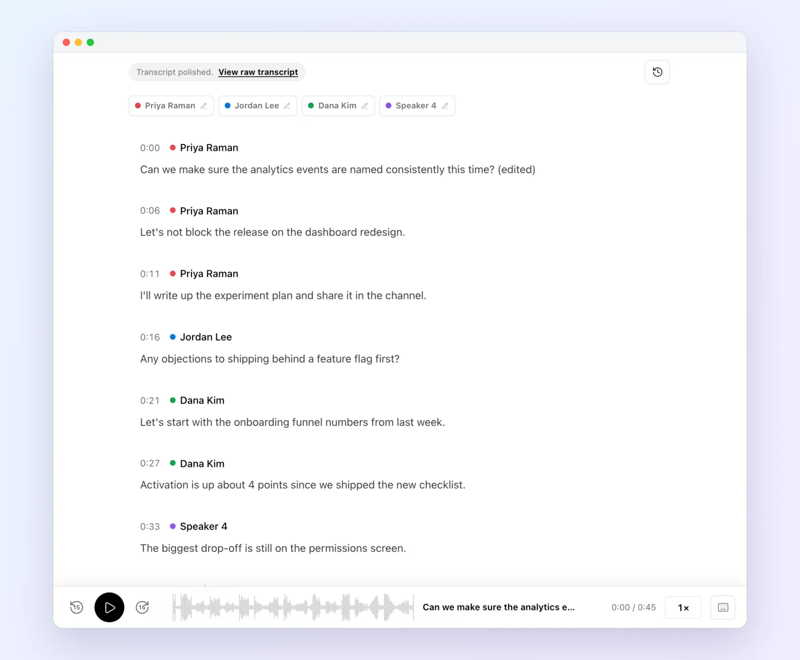
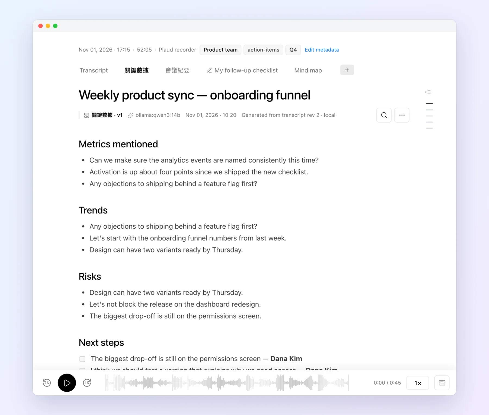
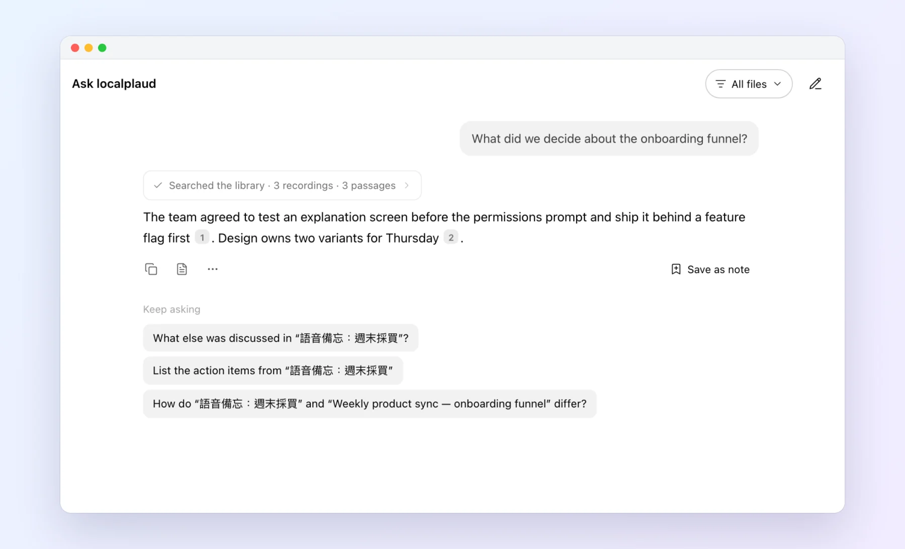
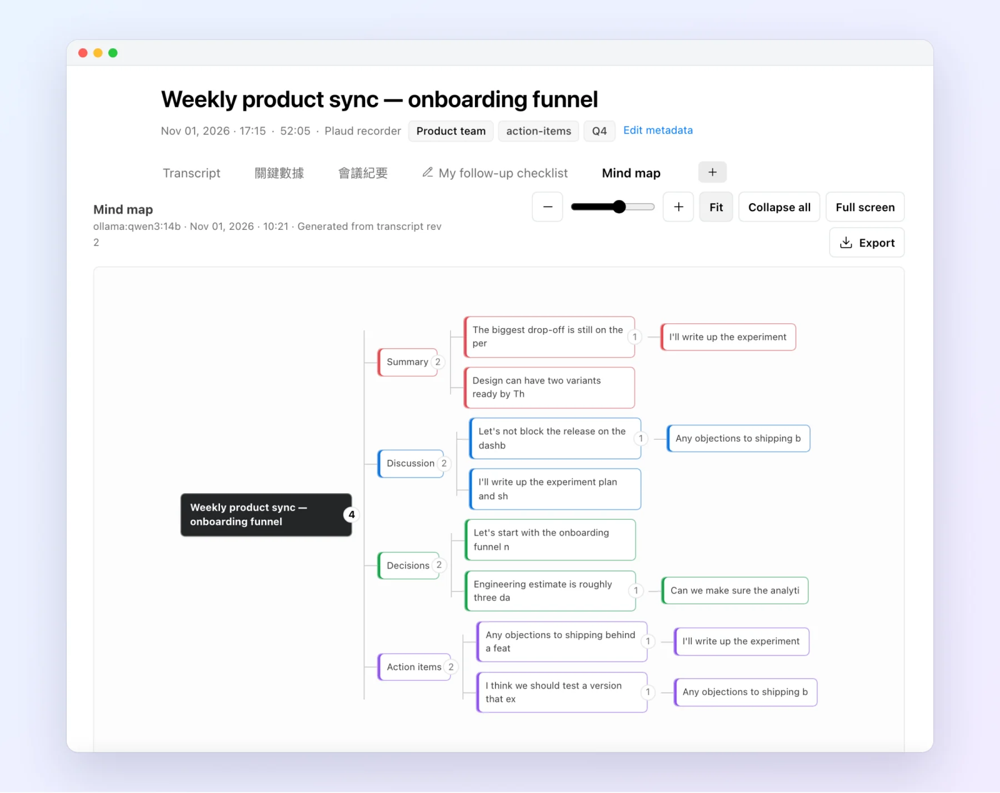

Keep your Plaud recorder and drop the subscription. localplaud turns raw audio into speaker-labelled transcripts, notes, mind maps, and cited answers, all on hardware you control.
No sign-up. The demo is read-only and uses a synthetic library.

Whisper large-v3-turbo plus pyannote diarization. Rename a speaker once, correct text inline, and compare against the raw transcript. Optional local voiceprints recognize the same people across recordings.

Full-transcript coverage, even for two-hour recordings. Keep several note styles per recording, and see which model and transcript revision produced each one.

Ask one recording or everything you've recorded. Every answer cites its sources, and each citation jumps to the moment in the audio.

Every recording becomes an expandable mind map you can export as an image. Chapters give long recordings a timeline you can jump through.

Listen, read, and correct from any browser. No app store required.
The parts you don't see in a screenshot.
Raw ASR and your corrections are separate revisions. Reprocessing never destroys user edits.
Every stage is durable and resumable. A failed index never discards a good transcript or summary.
Local models, your own GPU worker, or a cloud provider you pick, per stage. No silent fallback.
Process as much audio as your hardware handles. There's no meter running.
TXT, SRT, VTT, DOCX, PDF, Markdown, mind-map PNG, and library ZIPs.
AutoFlow rules apply templates, organize files, and deliver to webhooks or email.
Speaker labels are one of the most frequent complaints in r/PlaudNoteUsers. Plaud's help center says it does not automatically identify other speakers.
| localplaud | Plaud Intelligence | Otter.ai | Meetily | |
|---|---|---|---|---|
| Price | Free (MIT) + your hardware | Free 300 min · Pro $17.99/mo | Free 300 min · Pro $16.99/mo | Free · Pro $10/user/mo |
| Minute caps | None | 300 / 1,200 / unlimited | 300 / 1,200 / unlimited | None |
| Where AI runs | Local, your worker, or a provider you pick | Plaud cloud | Otter cloud | Local or your API key |
| Self-hostable | ✓ | — | — | ✓ |
| Speaker diarization | ✓ editable per segment | ✓ | ✓ | Pro plan |
| Names remembered across recordings | ✓ optional local voiceprints | Your own voice only | ✓ cloud | Not verified |
| Speaker rename updates notes | ✓ no per-minute fees | Regenerate (uses minutes) | Not verified | Not verified |
| Plaud recorder sync | ✓ automatic raw audio | ✓ | Manual upload | Not verified |
Public pricing and help pages, November 2026, monthly billing: Plaud · Otter · Meetily. Spot an error? Tell us.
Python 3.11+, ffmpeg, uv, and Ollama. Runs on Apple Silicon, NVIDIA, or CPU.
# Apple Silicon: --extra mlx · NVIDIA: --extra cuda git clone https://github.com/skyhong2002/localplaud.git && cd localplaud uv sync --extra faster-whisper --extra diarize --extra vad --extra local-llm cp config.example.toml config.toml && cp .env.example .env uv run localplaud auth login # one-time Plaud OAuth uv run localplaud run # sync + process + serve on :8080